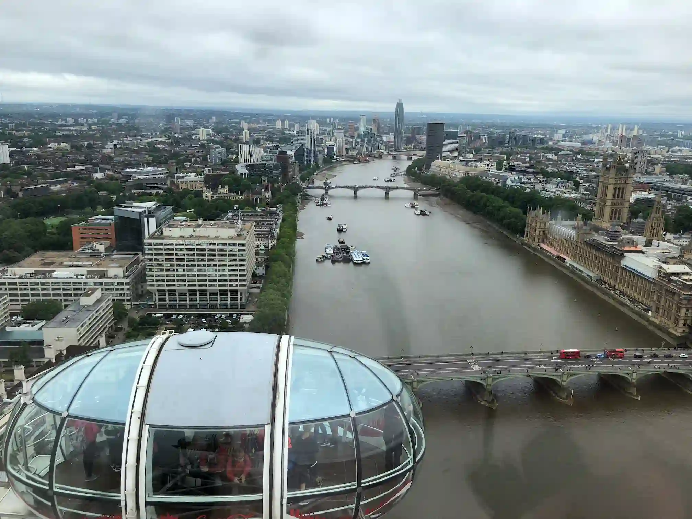

I love London, England because of its fascinating history and relation to Harry Potter! The London Eye is so relaxing and fun to ride, you can see so much of London from it! I also love the weather, it is perfectly chilly and rainy.
The view from the London Eye was so cool! London is so fascinating, you have brand new buildings right next to really old buildings! Like Big Ben! It was built between 1843-1859, 167 years ago! And the Tower of London was built in 1066, 960 years ago! And its right next to modern buildings!
